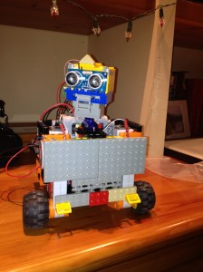
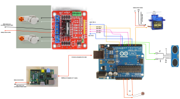
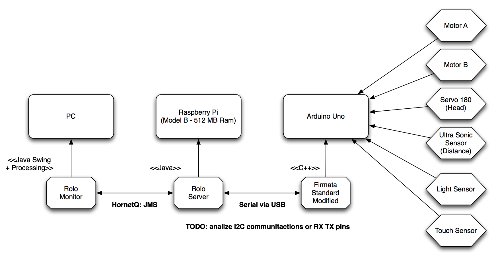

Rolo The Robot says: Happy New Year!
Hi Everyone! This is probably my last post of the year and in this occasion I want to share with you all a side project that I’ve being working on my spare time with my father. In less than 10 days we manage to build a small robot which runs all its logic inside the Drools Rule Engine. This first step main goal was to prove that it is possible to build a low cost robot which will be entirely controlled by the rule engine and the CEP features provided by Drools Fusion. We didn’t include any process execution in this first stage, but it is definitely on the roadmap. This post briefly explains what we have now working and what’s planned for the future, because this is just the beginning. The interesting side of the project is to make the robot completely autonomous, which means that it will run entirely on its own and without the need to be connected to a computer or to a power outlet in the wall.
Introduction
We started building this first prototype with the following goals in mind:
- Demonstrate that the Drools & jBPM Platform can help us to build a reliable and declarative environment to code the robot internal knowledge.
- Demonstrate that a robot can be constructed on top of the Rule & Process Engine in a reduced and portable platform. Some important points from our perspective are:
- It needs to run without an external computer
- It needs to be autonomous and run on batteries to have freedom of mobility
- It can be monitored and contacted via wireless
- It needs to react in near real time and process information without requiring long periods of time. We are doing the tests with 100 millisecond (because that’s more than enough in this stage) lapses now but the performance can be improved to support lower latency.
- Test different hardware options to decide which are the best components to use to build different types of robots
- Push the limits and mix the Rule/Process Engine arena with the Hardware/Electronics/Robotics arena.
- Incrementally build a framework to speed up the initial steps
- and of course, make it open source to improve collaboration and to join forces with other people which are interested in the same topics.
Hardware

- Rolo!
My father (Jose Salatino), “the electronic geek” help me with all the hardware side of the robot. I’ve started looking at the Lego NXT and WEDO platforms to see if we can reuse some of the cool things that they have designed, but the NXT runs with J2ME and it’s old at this point. I’m looking forward to see if they release something new soon. The Lego WEDO and Power Functions looks promising, but they have several limitations such as: reduced number of devices that you can handle via the USB port and there are some expensive pieces that you need to get if you want to make it work. When my father started playing with Arduino we find a lot of advantages which help us to get everything working in almost no time. In the other hand the Lego Motor & Sensors provide us a great and scalable environment to create advanced prototypes. For that reason, we choose to use Arduino as a central Hub to control a set of Sensor, Motors and Actuators, no matter if they are Lego or not.
The following figure shows the wiring between the different components that we are using, most of the components can be changed without affecting the software architecture:

- Hardware Wiring
This list summarize the list of components that we are using, please note that there are a lot of things to improve so this infrastructure is in no way set in stone:
- 1 x Raspberry Pi Model B
- 1 x Arduino Uno
- 2 x Lego NXT Servo Motor
- 1 x SR04 Ultra Sonic Sensor (Distance Sensor)
- 1 x SG90 180 Servo Motor
- 2 Battery Packs (10 AA batteries) -> we are working on this, don’t worry ;)
- 1 x USB Wireless Dongle
- 1 x LDR Sensor (Light Sensor)
Hardware Roadmap
From the Hardware perspective there are a lot of things to do. We will start researching about the I2C protocol to replace all the serial communications. We know that I2C is the way to go, but we didn’t had time yet to do all the necessary tests. We currently have a hardware/physical limitation about the number of devices that we can set up. We want to push the platform limits so we will be looking forward to add more motors and more sensors to increase the robot complexity and see how far we can go.
Software
From the software perspective we have a bunch of things to solve, but this section gives a quick overview about what has been done until now. We need to understand that the Raspberry Pi is not a PC, it’s an ARM machine, which is a completely different infrastructure. For Java that’s not supposed to be a problem, but it is. When you want to access the serial port or use the USB port to transmit data, you will start facing common issues about native libraries which are not compiled for the ARM platform. Once we manage to solve those issues we need to find a way to interact with the Arduino Board which is programmed in C/C++. Luckily for us there is software called Firmata which externalise via the Serial port the whole board. Using this software we can read and write digital/analog information from the board pins. This helps us a lot, because we will write a standard software inside the Arduino which will allow us to write/read all the information that we need into the board to control the motors and read the sensors. Unfortunately, as every standard we hit a non covered sensor (SR04 – UltraSonic Sensor), and for that reason we provided a slightly modified version of the Firmata Sketch, which can be found inside the project source repository. From the Java Perspective, there is a library called processing (Processing is an open source programming language and environment for people who want to create images, animations, and interactions) which has a number of sub libraries, one of them for interacting with Firmata. I borrowed two classes from Processing in order to customize to my particular needs. From the beginning I wanted to use Processing because believe that it has a lot of potential to be mixed with the Process and Rules Engine, but this initial stage is not taking advantage of it.
The following figure shows from a high level perspective the different software components that runs in order to bring Rolo to life:

- Software Components
As you can see, the Rolo Server expose and recieve information via JMS which allows us to build a Monitor to see the information and send more imperative commands or information about the world to the robot. Rolo Server is basically a Drools/jBPM Knowledge Session now, but a more robust schema with multiple sessions for different purpose will be adopted in future stages.
The Rules right now have access to all the Motors and Sensors information allowing us to write rules using those values. All the sensors input data are considered as events and for this reason we can use all the Drools Fusion temporal operators.
The following two rules are simple examples about what is being done inside the robot right now:
rule "Something too close - Robot Go Back"
when
$r: RoloTheRobot()
$m: Motor( )
UltraSonicSensor( $sensor: name )
$n: Number( doubleValue < 30) from accumulate (
DistanceReport( sensorName == $sensor, $d: distance )
over window:time( 300ms )
from entry-point "distance-sensor", average($d))
then
notifications.write("Process-SOMETHING_TOO_CLOSE:"+$n);
$m.start(120, DIRECTION.BACKWARD);
Match item = ( Match ) kcontext.getMatch();
final Motor motor = $m;
final HornetQSessionWriter notif = notifications;
((AgendaItem)item).setActivationUnMatchListener( new ActivationUnMatchListener() {
public void unMatch(Session session,
Match match) {
System.out.println(" Stop Motor");
motor.stop();
try{
notif.write("Stopping Motor because avg over: 30");
} catch(Exception e){
System.out.println("ERROR sending notification!!!");
}
}
} );
end
This rule checks the average of the distance received from a Distance Sensor (in this case the UltraSonic Sensor) in the case that the distance is less than 30cm in the last 300ms all the motors will be started at a fixed speed to move away from that object. This allows us to be sure that there is something in front of the robot instead of reacting in the first measure that matches the condition. Different functions can be used to correct wrong reads from the sensors and to improve the overall performance. Notice that after starting the motor we are registering an ActivationUnMatchListener, this will cause that as soon as the Rule doesn’t match anymore the motor will be stopped. You will see in the video, that the robot will go backward until the average received from the Distance Sensor in the last 300ms is over 30 cm.
There is another rule which use the Light Sensor to know how to go out from dark places.
Software Roadmap
After a well deserved holidays, I will be working on improving the code base, to allow to run all the software without the need to have an Arduino Board or any specific hardware. The main idea is to have an environment where we can simulate virtual motors and sensors. This will allows us to improve the development of the software without being tied to the hardware improvements. This will also allow you to collaborate with the project, if I get enough collaborations I can do weekly videos about how the robot behaves using your contributions :)
So, take the following list as a brain dump of the things that I need to do on the project:
- Improve the infrastructural code: JMS messages encoding, Monitor App, Simulation App
- Create more rules and processes to enable Rolo to do different things such as: recognize the environment/room where its running, interact with different objects,
- Mock a coordinate system and a model store different objects recognized from the environment.
- Use processing to draw in real time what is being sensed by Rolo in a 3D environment
- Enable Rolo to ask questions using the Human Task Services provided by jBPM
- Define the requirements for actuators and how to use them
- Video Streaming and image analysis
Video
Finally, let me introduce you: Rolo The Robot!
Notice in the last 20 seconds of the video you can see the Rolo Client/Monitor application which shows us all the notifications that are being sent from the robot. You can see a small control panel which allows us to send some commands and also see the values that are being captured from the sensors.
Rolo says: Happy New Year to you all!
Stay tuned!